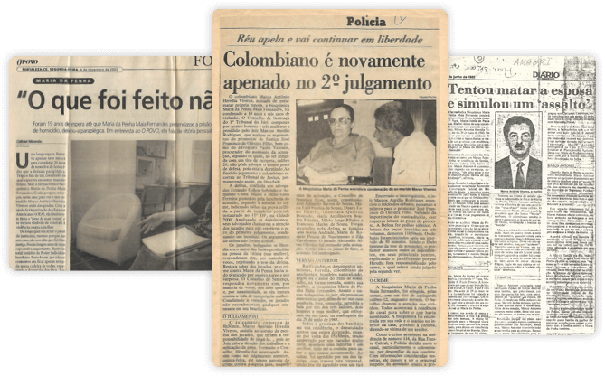

MARIA DA PENHA ✞
HISTÓRIA
Maria da Penha Maia Fernandes (Fortaleza-CE, 1º de fevereiro de 1945) é farmacêutica bioquímica e se formou na Faculdade de Farmácia e Bioquímica da Universidade Federal do Ceará em 1966, concluindo o seu mestrado em Parasitologia em Análises Clínicas na Faculdade de Ciências Farmacêuticas da Universidade de São Paulo em 1977.
Em 1974, Maria da Penha conheceu Marco Antonio Heredia Viveros, ele demonstrava ser muito amável, educado e solidário com todos à sua volta. O casamento aconteceu em 1976. Após o nascimento da primeira filha e da finalização do mestrado de Maria da Penha, eles se mudaram para Fortaleza, onde nasceram as outras duas filhas do casal. Foi a partir desse momento que essa história mudou.
As agressões começaram a acontecer quando ele conseguiu a cidadania brasileira e se estabilizou profissional e economicamente. Agia sempre com intolerância, exaltava-se com facilidade e tinha comportamentos explosivos não só com a esposa mas também com as próprias filhas.

O CRIME
NO ANO DE 1983, Maria da Penha foi vítima de dupla tentativa de feminicídio por parte de Marco Antonio Heredia Viveros. Um dia, ela estava dormindo quando foi atingida por um tiro nas costas de seu marido. Porém ele negou, disse que havia sido uma tentativa de assalto. Devido ao tiro, ela ficou paraplégica, e ao voltar pra casa, foi mantida em cárcere privado durante 15 anos.
Após muitas agressões e tentativas de homicídio, com ajuda de amigos e família de Maria da Penha conseguiram dar apoio jurídico a ela e providenciaram a sua saída de casa sem que isso pudesse configurar abandono de lar; assim, não haveria o risco de perder a guarda de suas filhas.
Maria da Penha ficou 19 anos lutando por justiça, no primeiro julgamento, em 1991 o agressor foi condenado a 15 anos de prisão e ao segundo julgamento, 5 anos depois, foi condenado a 10 anos e meio, mas não cumpriu nenhum deles devido a recursos movidos por seu advogado.
O PRIMEIRO JULGAMENTO DE MARCO ANTONIO ACONTECEU SOMENTE EM 1991, OU SEJA, OITO ANOS APÓS O CRIME. O AGRESSOR FOI SENTENCIADO A 15 ANOS DE PRISÃO, MAS, DEVIDO A RECURSOS SOLICITADOS PELA DEFESA, SAIU DO FÓRUM EM LIBERDADE.
Então Maria escreveu o livro "Sobrevivi... posso contar" com objetivo de ajudar outras mulheres. E graças a repercussão desse caso, foi sancionada a Lei Maria da Penha pelo presidente Lula.